Capítulo 2 Conceptos Generales
2.1 Derivadas, derivadas parciales y sus implicaciones.
This methods tries to explain the correlation structure of a set of predictor variables using a smaller set o linear combinations of these variables called components, note that components are not variables, rather indicators of linear combinations between variables.
Given a dataset with \(m\) variables a set of \(k\) linear combinations can be used to represent it (meaning that \(k\) contains almost as much information as the \(m\) variables), also \(k<<m\).
2.2 Funciones de Activación:
2.2.1 TanH
TanHGener <- function(x0){
(2/(1+exp(-2*x))-1)
}
x <- seq(-5,5,.01)
y <- TanHGener(x)
plot(x,y,
main = "Tangente Hiperbolica TanH",
type = "l",
col = "red",
lwd = 4)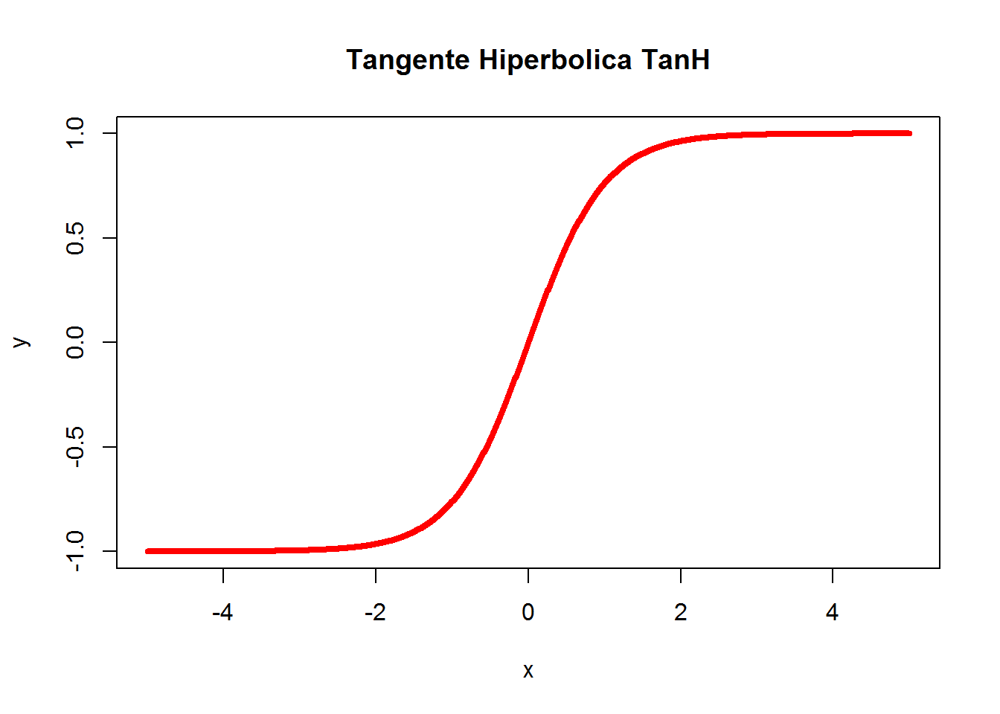
2.2.2 Softsign
softSignGener <- function(x){
x/(1+abs(x))
}
y1 <- softSignGener(x)
plot(x,y1,
main = "Softsign",
type = "l",
col = "red",
lwd = 4)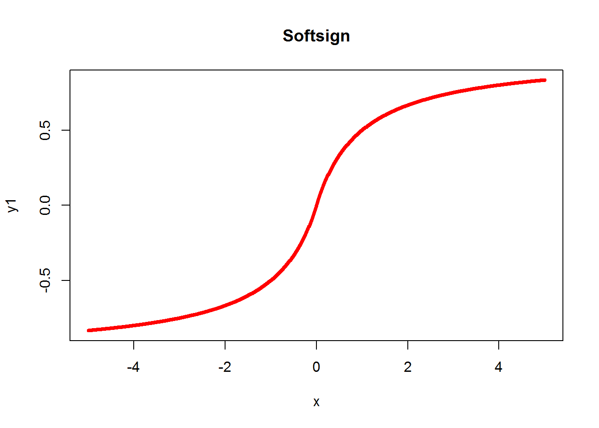
2.2.3 SoftPlus
softPlusGener <- function(x){
log(1+exp(x))
}
y3 <- softPlusGener(x)
plot(x,y3,
type = "l",
main = "SoftPlus",
col = "red",
lwd = 4)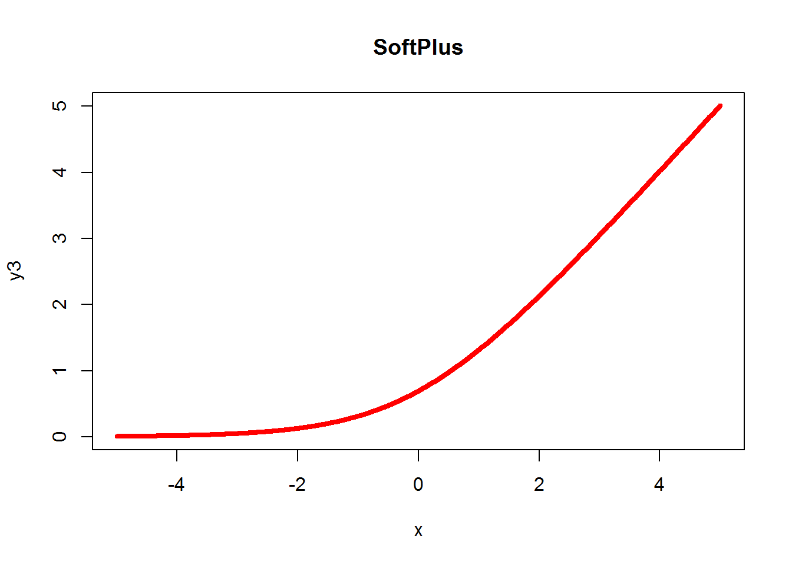
2.2.4 SoftExponential
softExpGener <- function(a,x){
if (a < 0){
-1*((log(1-a*(x+a)))/a)
}
else {
if (a == 0){
x
}
else {
((exp(a*x)-1)/a)+a
}
}
}
y2 <- softExpGener(-1,x)
plot(x,y2,
main = "SoftExponential",
type = "l",
col = "red",
lwd = 4)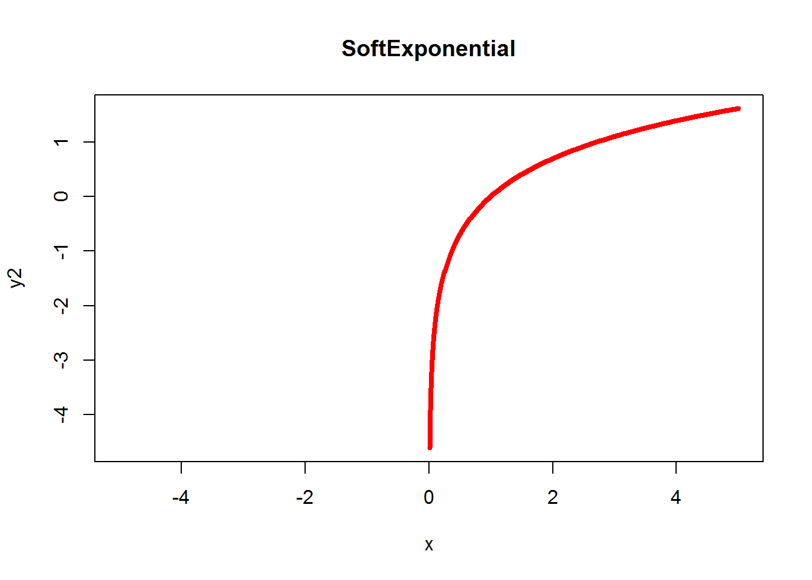
2.2.5 Sinusoid
sinusoidalGener <- function(x){
sin(x)
}
y4 <- sinusoidalGener(x)
plot(x,y4,
type = "l",
main = "Sinusoidal",
col = "red",
lwd = 4)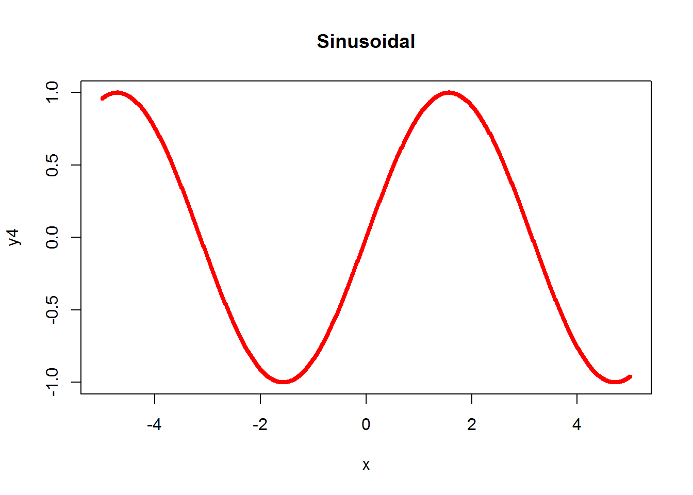
2.2.6 Sinc
sincGener <- function(x){
xt<-x
xt[x==0]=1
xt[x!=0]=sin(x[x!=0])/x[x!=0]
xt
}
y5 <- sincGener(x)
plot(x,y5,
type = "l",
main = "Sinc",
col = "red",
lwd = 4)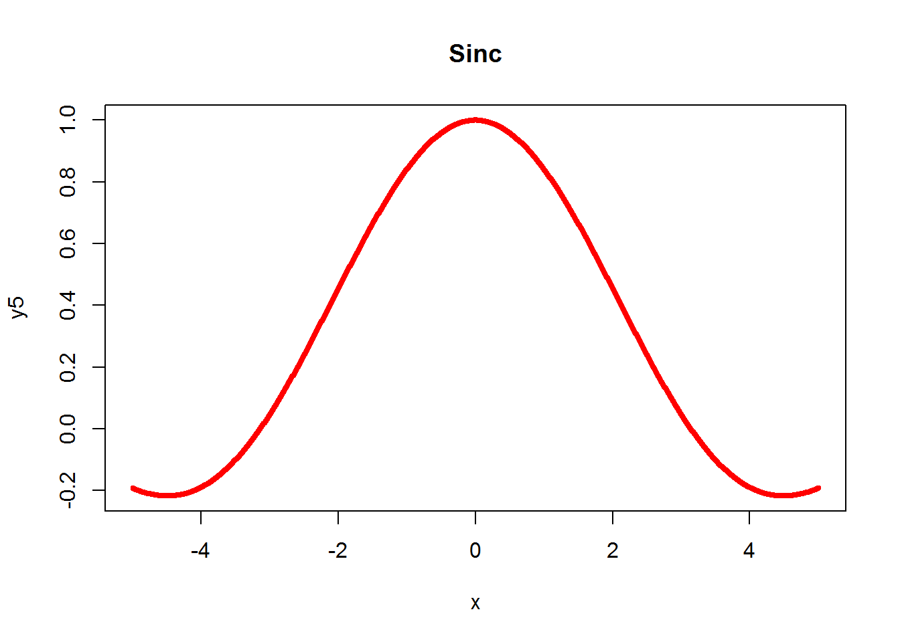
2.2.7 Scaled exponential linear unit (SELU)
seluGener <- function(l,a,x){
xt<-x
xt[x<0]=l*a*(exp(x[x<0])-1)
xt[x>=0]=l*x[x>=0]
xt
#if (x < 0){
# l*a*(exp(x)-1)
#}
#else {
# l * x
#}
}
y6 <- seluGener(1.0507, 1.67326,x)
plot(x,y6,
type = "l",
main = "SELU",
col = "red",
lwd = 4)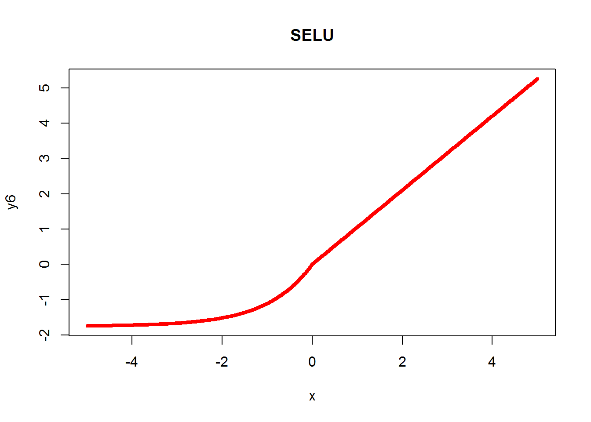
2.2.8 Rectified Linear Unit (ReLU)
ReLUGener <- function(x){
x[x<0]=0
x
}
y8 <- ReLUGener(x)
plot(x,y8,
main = "ReLU",
type = "l",
col = "red",
lwd = 4)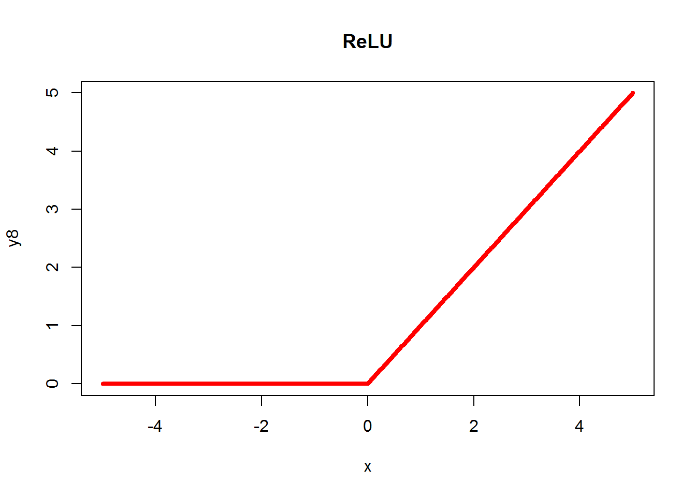
2.2.9 Randomized leaky rectified linear unit (RReLU)
rreluGener <- function(a,x){
xt<-x
xt[x<0]=a*x[x<0]
xt
}
y9 <- rreluGener(.5,x)
plot(x,y9,
main = "RReLU",
type = "ln",
col = "red",
lwd = 4)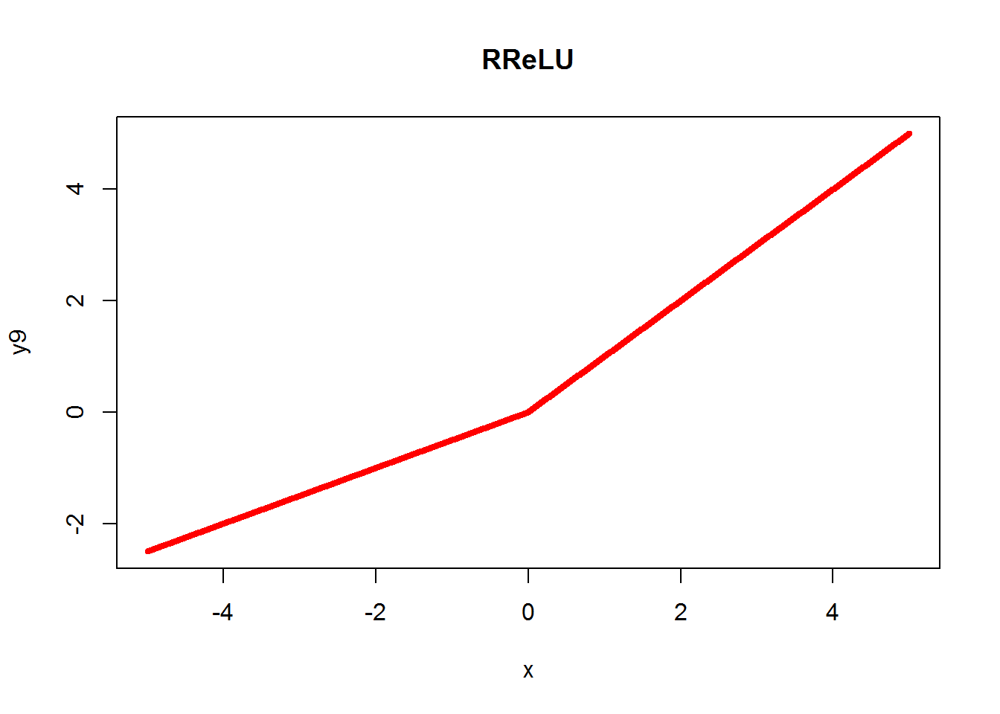
2.2.10 Parametric Rectified linear unit (PReLU) is just as RReLU
2.2.11 Logistic (a.k.a Soft Step)
logisticGener <- function(x){
1/(1+exp(x))
}
y10 <- logisticGener(x)
plot(x,y10,
main = "Logistic",
type = "ln",
col = "red",
lwd = 4)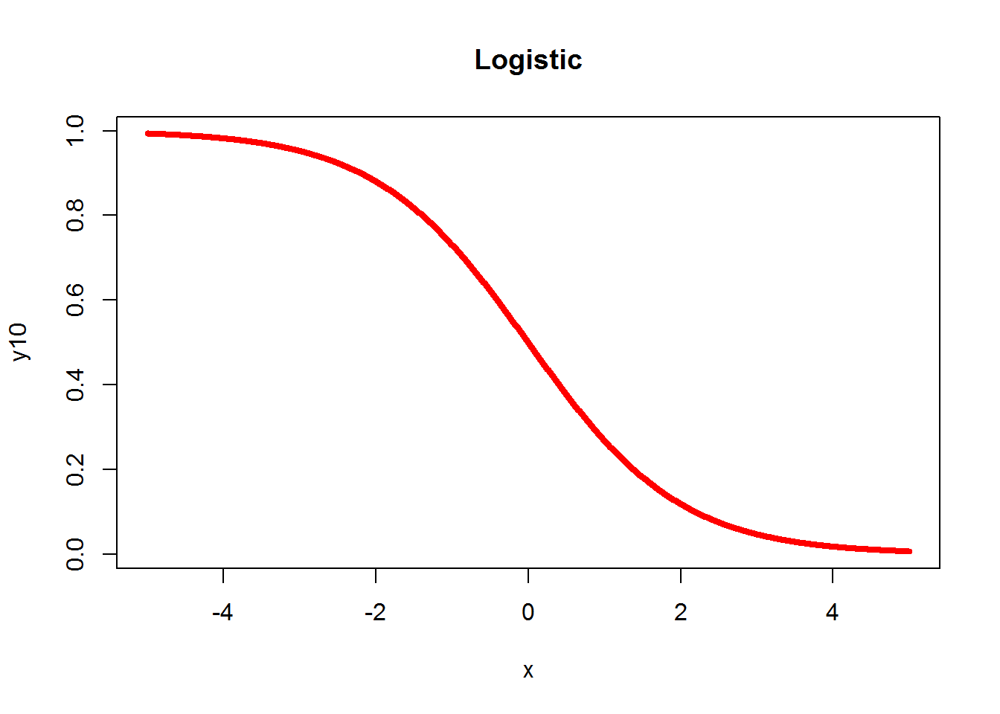
2.2.12 Leaky rectified linear unit (Leaky ReLU)
leakyReluGener <- function(x){
xt<-x
xt[x<0]=0.01*x[x<0]
xt
}
y11 <- leakyReluGener(x)
plot(x,y11,
main = "Leaky ReLU",
type = "ln",
col = "red",
lwd = 4)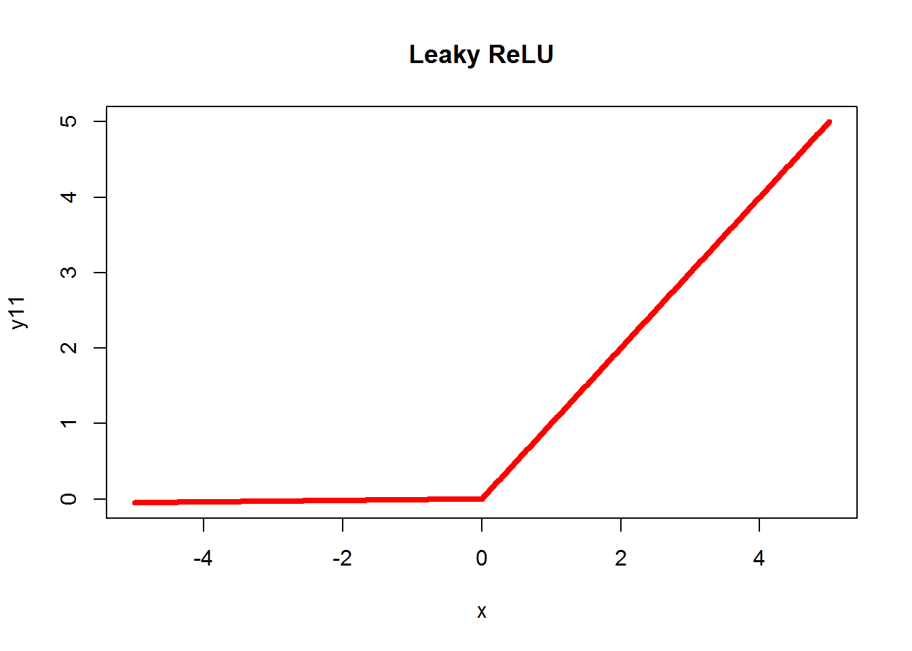
2.2.13 Identity
identityGener <- function(x){
x
}
y12 <- identityGener(x)
plot(x,y12,
main = "Identity",
type = "ln",
col = "red",
lwd = 4)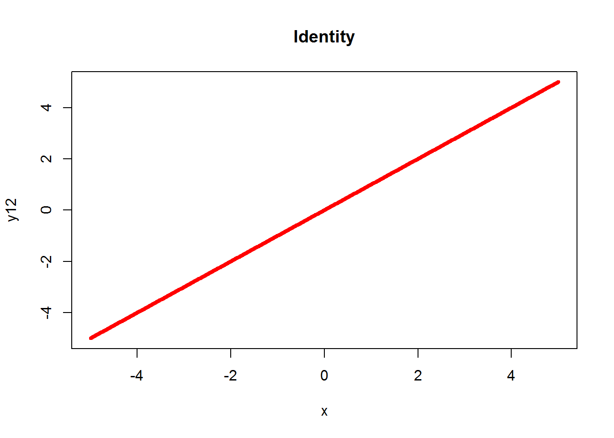
2.2.14 Gaussian
gaussianGener <- function(x){
exp(-1*x^2)
}
y13 <- gaussianGener(x)
plot(x,y13,
main = "Gaussian",
type = "ln",
col = "red",
lwd = 4)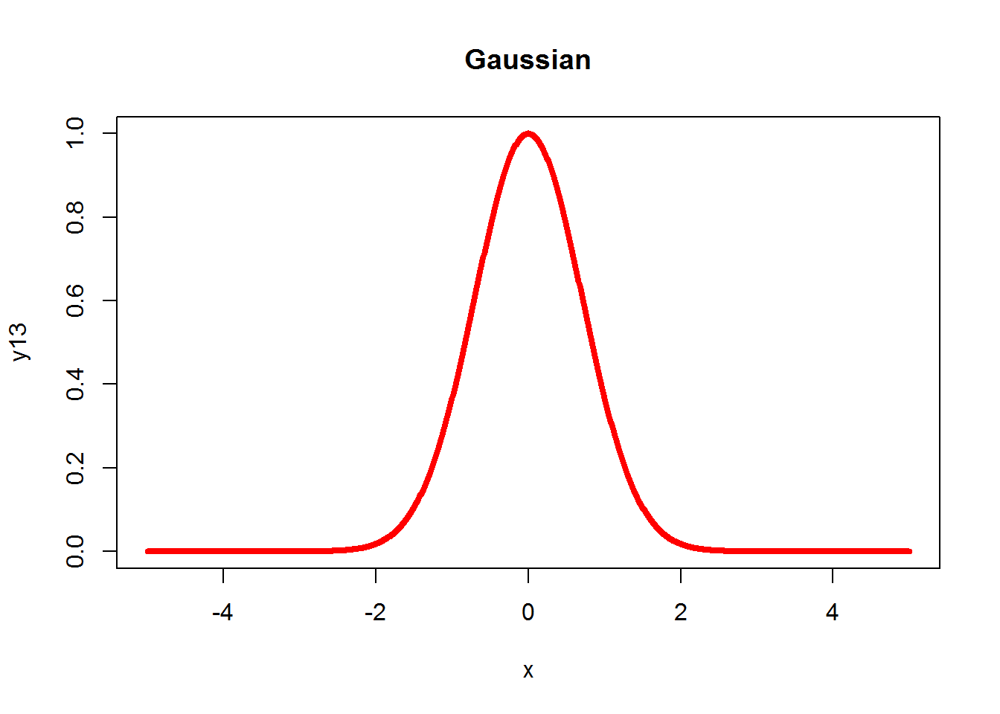
2.2.15 Exponential linear unit (ELU)
eluGener <- function(a,x){
xt<-x
xt[x<0]=a*(exp(x[x<0])-1)
xt
}
y14 <- eluGener(1,x)
plot(x,y14,
main = "Exponential linear unit (ELU)",
type = "ln",
col = "red",
lwd = 4)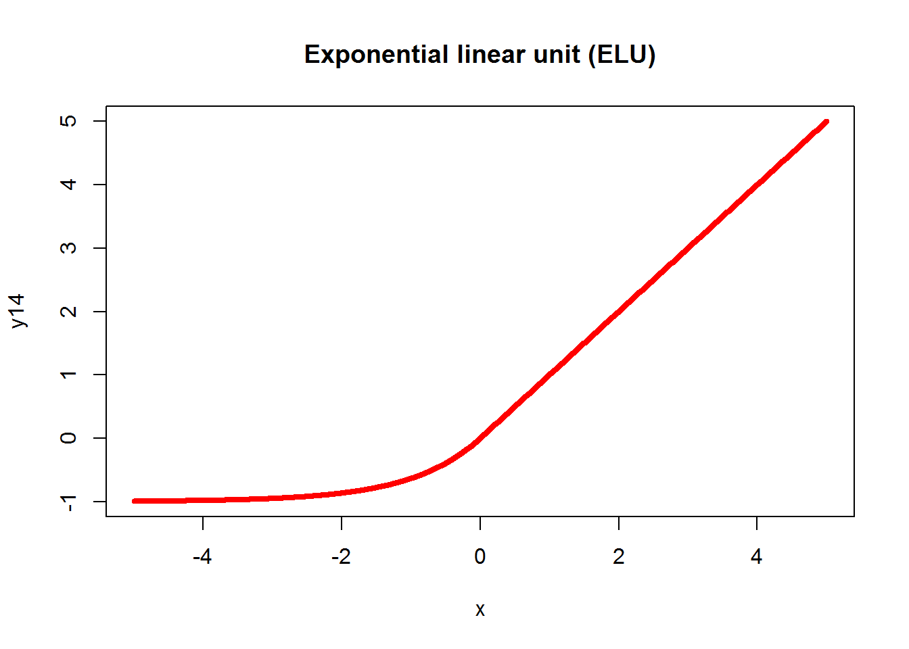
2.2.16 Binary Step
binaryGener <- function(x){
#temp1<-x
x[x<=0]<-0
x[x>0]<-1
x
}
y15 <- binaryGener(x)
plot(x,y15,
main = "Binary Step",
type = "ln",
col = "red",
lwd = 4)
2.2.17 Bent identity
bentGener <- function(x){
(((sqrt(x^2+1)-1))+(2))+x
}
y16 <- bentGener(x)
plot(x,y16,
main = "Bent Identity",
type = "ln",
col = "red",
lwd = 4)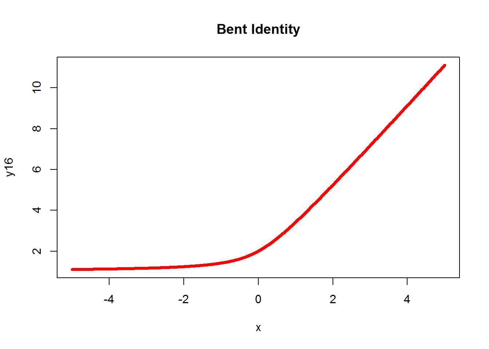